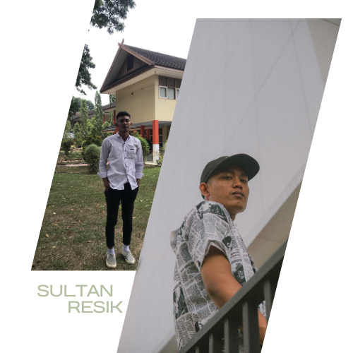
Hello! I'm Kemas. a Lecturer and Expert Staff at the Regional House of Representatives (DPRD) of Jambi
Dr. K. M. Sultan Resik, S.Kom., S.IP., M.Kom., M.IP.
Universitas Nurdin Hamzah
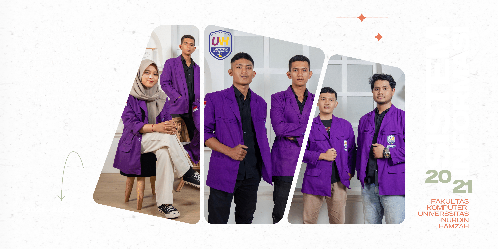
Universitas Jambi
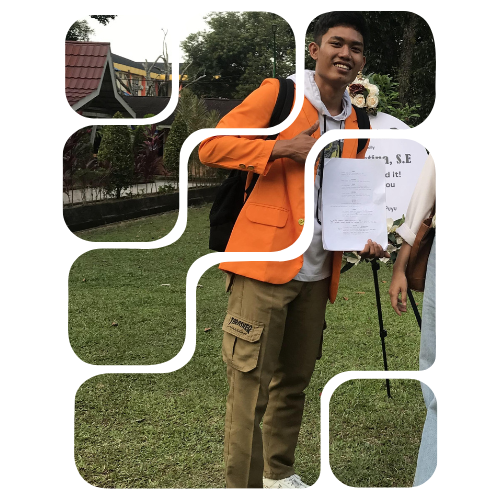
ILMU
PEMERINTAHAN
2022-2026
Saya adalah seorang individu yang bersemangat dan berjiwa besar, berbekal gelar sarjana dari program studi Ilmu Pemerintahan pada tahun 2026. Dengan kegigihan dan dedikasi, saya berhasil meraih IPK 3.84 yang membanggakan, diakui dengan penghargaan Cum Laude.
Selama perjalanan akademis saya, saya telah terlibat dalam berbagai kegiatan akademis dan non-akademis yang memperkaya pengalaman saya. Saya percaya bahwa pendidikan bukan hanya tentang prestasi akademis, tetapi juga tentang pertumbuhan pribadi, keterlibatan dalam komunitas, dan keterampilan sosial.
Stockholm University
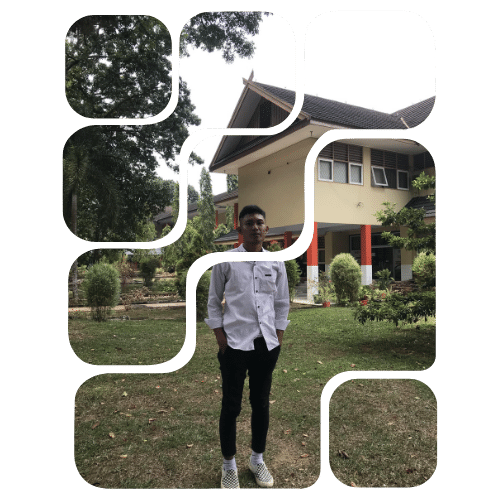
GOVERNMENT
SCIENCE
2026-2028
SETELAH BERHASIL LULUS SEBAGAI SARJANA ILMU PEMERINTAHAN SAYA BERKESEMPATAN KEMBALI UNTUK MELANJUTKAN STUDI PASCASARJANA KE STOCKHOLM UNIVERSITY, DENGAN MENGAMBIL PROGRAM STUDI YANG SAMA YAITU GOVERNMENT SCIENCE
Universitas Terbuka
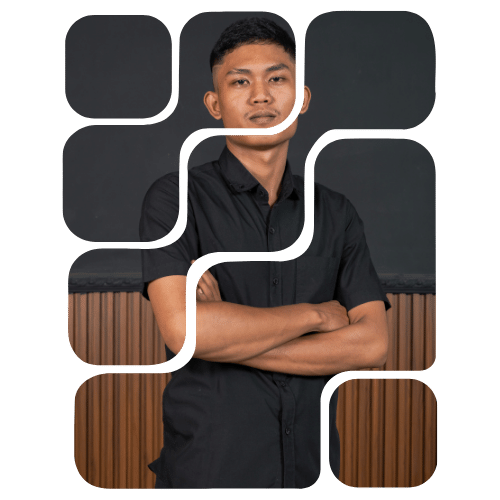
SISTEM
INFORMASI
2028-2030
SAYA KEMBALI MELANJUTKAN STUDI SAYA KETIKA PULANG KE INDONESIA, BERBEDA HAL NYA KETIKA SAYA MENGAMBIL S2 DI STOCKHOLM UNIVERITY, KALI INI SAYA MELANJUTKAN KE UNIVERSITAS TERBUKA DENGAN PROGRAM STUDI SISTEM INFORMASI DIMANA KAMPUS INI MEMILIKI SISTEM PEMBELAJARAN FULL ONLINE SEHINGGA MEMPERMUDAHKAN SAYA UNTUK MELAKUKAN KEWAJIBAN SAYA SEBAGAI SEORANG DOSEN SEMBARI MELANJUTKAN STUDI SAYA
Universitas Sriwijaya
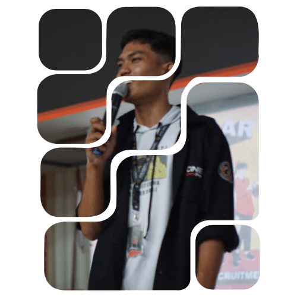
ADMINISTRASI
PUBLIC
2030-2033
KARENA TUNTUTAN DARI KEMENDIKBUDRISTEK YANG MEWAJIBKAN DOSEN UNTUK S3, AKHIRNYA SAYA KEMBALI MELANJUTKAN STUDI, KALI INI SAYA MENGAMBIL PROGRAM DOKTOR(S3) FAKUTAS ILMU SOSIAL DAN POLITIK UNIVERSITAS SRIWIJAYA DENGAN PROGRAM STUDI ADMINISTRASI PUBLIC SELAMA KURANG LEBIH 3 TAHUN DAN PADA USIA 30 TAHUN SAYA BERHASIL MENDAPATKAN GELAR DOKTOR UNTUK PERTAMAKALINYA .
Pekerjaan
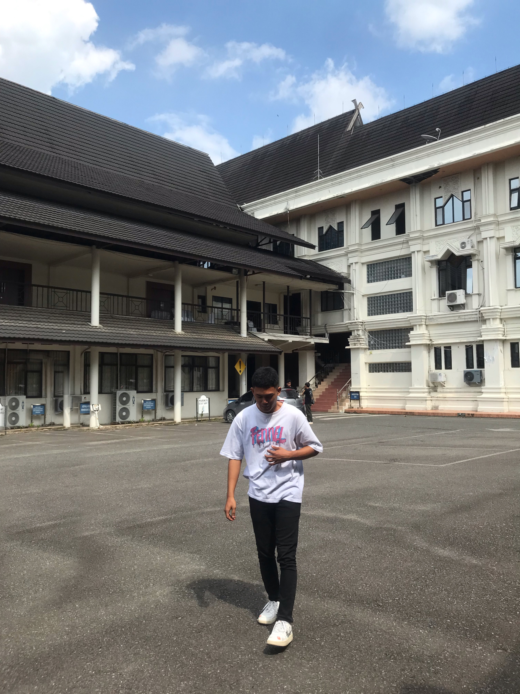
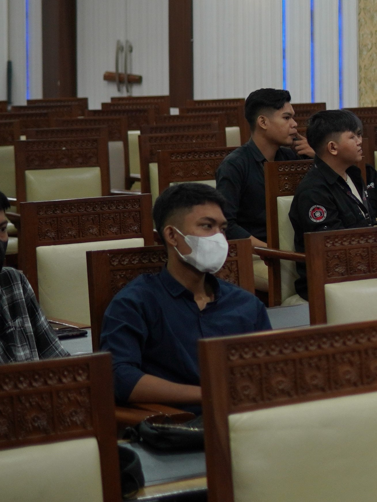

DOSEN
FAKULTAS ILMU SOSIAL DAN ILMU POLITIK
TENAGA AHLI
DPRD PROVINSI JAMBI
OWNER PRODUCTION HOUSE
VizualVortex
OWNER WEDDING ORGANIZING
EVER AFTER EVENTS
>
ORGANISASI
CINEMA
UNJA
JABATAN : BPH DEVISI KREATIF
UKM Cinema adalah salah satu dari 26 Unit Kegiatan Mahasiswa (UKM) aktif di Universitas Jambi. UKM Cinema merupakan lembaga kemahasiswaan yang berfokus pada kegiatan perfilman dan audiovisual. UKM ini menjadi wadah bagi mahasiswa yang memiliki minat dan bakat dalam bidang perfilman dan audiovisual untuk mengembangkan kemampuan mereka. UKM Cinema juga sering mengadakan kegiatan seperti pemutaran film, event, dll
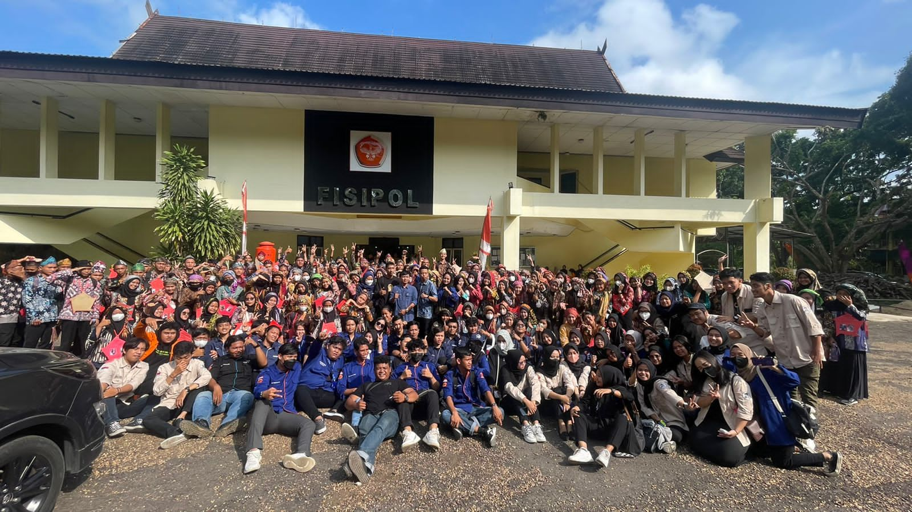
HIMPUNAN
MAHASISWA (HIMIP)
JABATAN : KETUA UMUM(2024-2025)
Himpunan Mahasiswa Ilmu Pemerintahan atau yang dikenal dengan HIMIP Universitas Jambi, berada dalam lingkup Fakultas Ilmu Sosial dan Ilmu Politik. Pada awalnya himpunan ini bernama HMJ-IP (Himpunan Mahasiswa Jurusan Ilmu Pemerintahan), kemudian pada tahun 2018 berganti menjadi HIMIP dikarenakan Ilmu Pemerintahan merupakan Program Studi. Saat ini HIMIP memiliki 6 divisi yaitu ; Sosial Masyarakat (SOSMAS), Managerial Organization (MO), Pengembangan Sumber Daya Organisasi (PSDO), Media dan Propaganda (MEPRO), Seni Budaya dan Olahraga (SENBUDA), dan Kewirausahaan.
HIMIP bekerja sama dan berkontribusi bersama Prodi Ilmu Pemerintahan untuk saling mengembangkan dan memajukan Program Studi ini dengan melalui berbagai kegiatan, yang telah dirancang bersama. Yang mana salah satunya yaitu HIMIP juga rutin dalam mengadakan diskusi-diskusi mengenai latar belakang keilmuwan yang sedang menjadi topik hangat di tengah masyarakat, bersama dosen dan para mahasiswa. Serta menganalisa berbagai permasalahan tersebut dengan memberikan solusi-solusi terbaik.
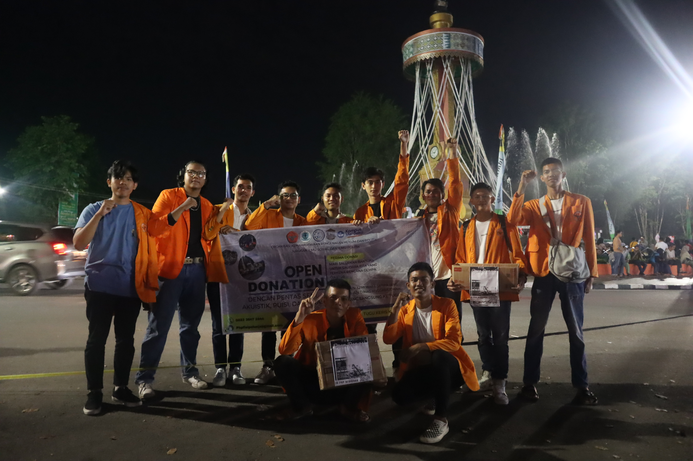
ORGANISASI
OK-PHP
JABATAN : ANGGOTA MEDIASI
OKPHP, singkatan dari Organisasi Kemahasiswaan Pengenalan Hukum dan HAM di Universitas Jambi, adalah sebuah entitas mahasiswa yang didedikasikan untuk memperkenalkan dan memperluas pemahaman mahasiswa terhadap bidang hukum dan hak asasi manusia. Sebagai bagian integral dari komunitas mahasiswa di Universitas Jambi, OKPHP bertujuan untuk memberikan platform yang mendukung pertumbuhan akademis dan pengembangan pribadi dalam konteks hukum.
Dengan berbagai kegiatan dan program, OKPHP berkomitmen untuk memberikan wawasan mendalam tentang sistem hukum, aspek-aspek hak asasi manusia, dan isu-isu terkini yang terkait. Melalui seminar, lokakarya, dan kegiatan sosial lainnya, organisasi ini menciptakan lingkungan yang mendukung kolaborasi, pembelajaran, dan pengembangan keterampilan kepemimpinan.
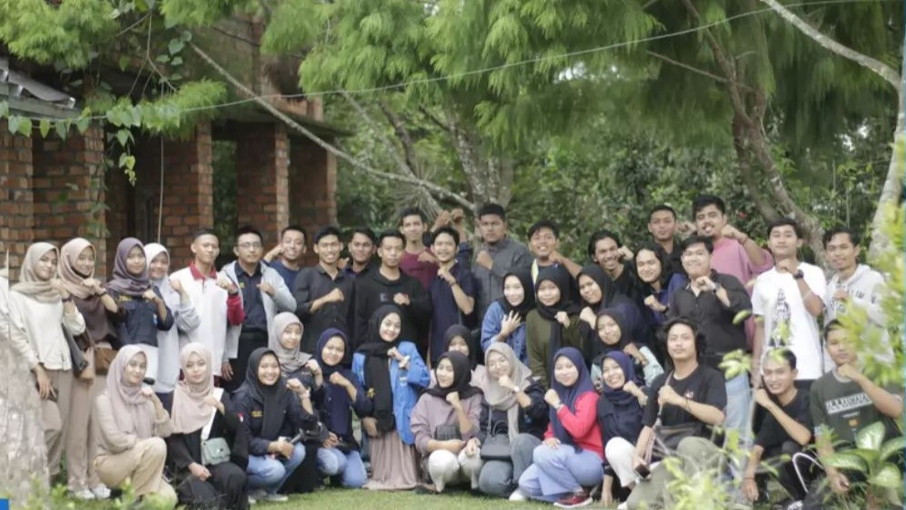
PERGERAKAN
MAHASISWA ISLAM INDONESIA
JABATAN : ANGGOTA KOMISARIAT FISIPOL
PMII adalah organisasi mahasiswa Islam yang memiliki visi untuk memajukan Indonesia dengan menggabungkan konsep Islam dan nasionalisme. PMII aktif dalam kegiatan-kegiatan sosial dan politik serta membantu masyarakat di sekitar tempat tinggal mereka.
PMII juga membuka kesempatan bagi mahasiswa Islam, alumni dan masyarakat umum untuk bergabung dalam organisasi ini dengan syarat memiliki semangat kebangsaan dan keislaman serta komitmen untuk mengabdikan diri bagi masyarakat Indonesia. Dalam PMII, setiap anggota memiliki hak dan tanggung jawab yang sama dalam mencapai tujuan organisasi. Oleh karena itu, PMII menjadi organisasi mahasiswa yang penting dan bermanfaat untuk perkembangan Indonesia ke depan.
KELEBIHAN DAN KEKURANGAN
Saya memiliki sejumlah kelebihan yang telah terbukti berharga dalam berbagai konteks
pribadi dan profesional. Pertama, kemampuan manajemen waktu saya yang cemerlang memungkinkan
saya untuk bekerja dengan efisien dan tetap produktif. Hal ini memberi saya keunggulan dalam menyelesaikan
tugas-tugas dengan baik, bahkan dalam tekanan waktu yang ketat.
Selanjutnya, kemampuan saya untuk dengan mudah beradaptasi dengan lingkungan
baru telah membuka peluang untuk berkolaborasi dalam tim yang beragam dan menghadapi perubahan dengan sikap
yang terbuka. Fleksibilitas ini menjadi aset berharga dalam menghadapi tantangan dan situasi yang
terus berkembang.
saya juga menyadari adanya beberapa kekurangan yang perlu diperhatikan. Terkadang,
dorongan saya untuk mencapai banyak hal dalam waktu singkat dapat membuat saya terlihat terlalu ambisius,
yang dapat memengaruhi fokus dan keberlanjutan dalam mencapai tujuan. Selain itu, kecenderungan
saya untuk selalu menilai diri saya dengan
standar yang tinggi dapat menghasilkan tingkat stres yangbr
tidak perlu.
Sementara saya senantiasa berusaha untuk mengatasi kekurangan ini,
saya percaya bahwa pengakuan terhadap aspek positif dan perbaikan terus-menerus pada area yang perlu
diperbaiki merupakan langkah integral dalam pengembangan pribadi dan profesional saya.
SKILL